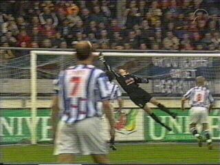
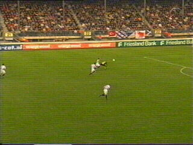

| SC Heerenveen - Roda JC (0-0) 20 april 2002 |

Mooie redding Kalac op kopbal van Denneboom.

Bakkati haalt de doorgebroken Tchoutang onderuit.
Sterk geeft slechts de gele kaart aan de speler
van Heerenveen.

Vervolgens wordt scheidsrechter Sterk er door de
grensrechter op geattendeerd dat Tchoutang naar
de keeper gespuwd zou hebben. Daarop trekt Sterk
de rode kaart voor de verontwaardigde Tchoutang.
Een storm van protest breekt bij de Roda-selectie
uit.
Ook de Roda-supporters raken door het dolle
heen. Links op het hek: Eric van der Luer.
Kalac krijgt geel voor tijdrekken.
Lurling heeft het aan de stok met Lachambre en
krijgt geel. Daarna nog eens geel, dus rood, voor
het provoceren van de scheidsrechter.
De 0-0 eindstand kan gezien de vele blessures en
schorsingen als een kleine overwinning beschouwd
worden, te meer daar door dit kostbare punt de
nacompetitie waarschijnlijk definitief ontlopen wordt.
©KPD